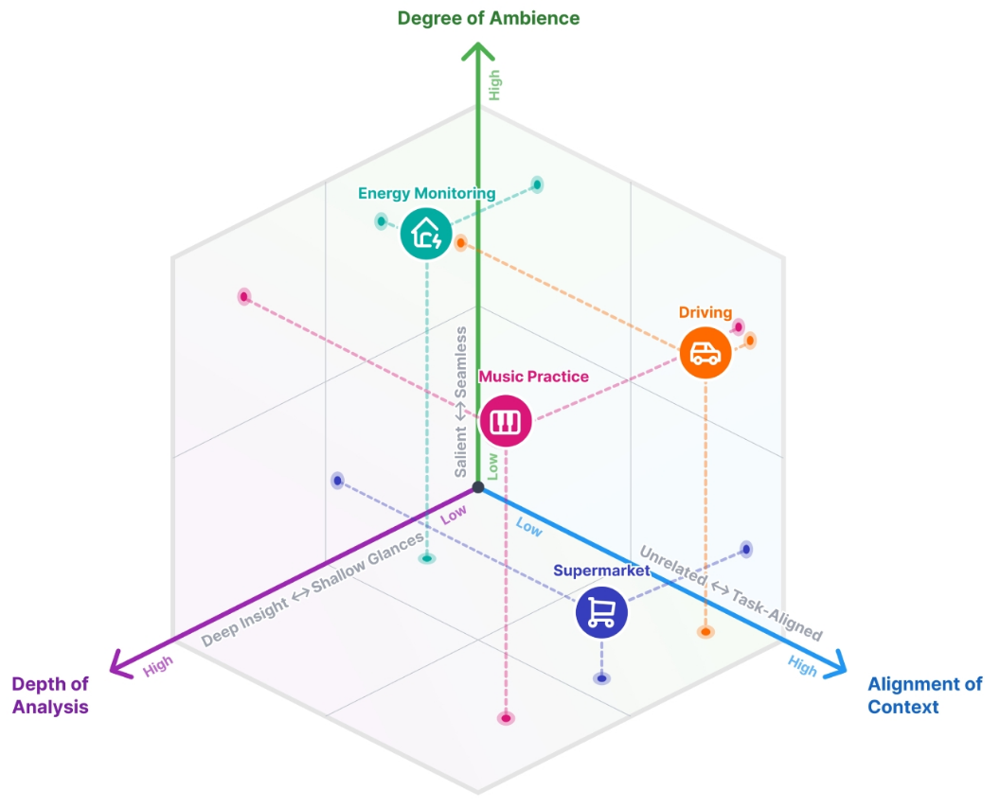

Ambient Analytics: Calm Technology for Immersive Visualization and Sensemaking

(opens in new tab)
Venue. IEEE CG&A (2026)
Abstract. Abstract—Augmented reality has great potential for embedding data visualizations in the world around the user. While this can enhance users’ understanding of their surroundings, it also bears the risk of overwhelming their senses with a barrage of information. In contrast, calm technologies aim to place information in the user’s attentional periphery, minimizing cognitive load instead of demanding focused engagement. In this column, we explore how visualizations can be harmoniously integrated into our everyday life through augmented reality, progressing from visual analytics to ambient analytics.
Link to this page: